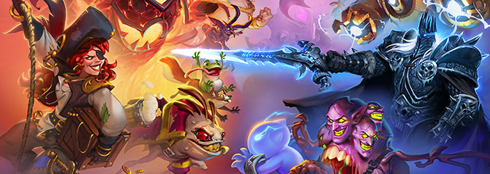

HearthStone Battlegrounds Newbie Tips
Hearthstone recent version of the update and let the tavern more new players. For many new players, if there are not enough cards, Battlegrounds is the first choice. However, newcomers want to quickly familiar with but not so simple, today let me take a look at the Battlegrounds beginner's strategy.
1.Basic setting
Costs
After you finish the newbie tutorial of Battlegrounds, if you have ever played similar self-moving games, I believe you must be familiar with the basic rules, but those who have no relevant game experience need to understand the following contents carefully.
- Cost (mint)
- Tavern Levels
- Refresh and freeze
You will get 3 coins in the first turn, and every turn after that you will get one more coin, with a cap of 10 coins, and the coins you have will be refreshed at the beginning of each turn, regardless of whether you used them up in the last turn or not, so make sure to use up your coins as much as possible each turn.
There are six levels of taverns, and each time you upgrade your tavern, you will need a certain amount of coins.
Each refresh in the pub needs to consume 1 coin, so pay attention to your expenses, don't buy the pieces because you have no money because of the refresh. Of course, there are some special heroes whose refresh cost is different because of their skills, such as Milhouse, whose refresh cost is fixed at 2 coins.
When you don't have enough coins to buy the pieces you need that turn, you can use the freeze function, each freeze and unfreeze does not consume coins, but note that the maximum number of freezes per turn is five, so don't miss key pieces because of greed.
2.Newbie Stage Game Tips:

| Number of Gold Coins | Strategy | Comments | |
| 3 | Buy the best minion for financial management or figure. | Have at least 1 minion at the end of the round. | |
| 4 | Upgrade the tavern to tier 2. | Have at least 1 minion at the end of the round. | |
| 5 | Purchase 1/2 minion(s). | Best case buy two. If you have a good follower, you can freeze it and save it for purchase next turn. | |
| 6 | Purchase 2 minions. | End the round with at least 4 minions. | |
| 7 | Upgrade the tavern to tier 3 and Purchase 1 minion. | End the round with at least 5 minions. Upgrade first. | |
| 8 | Purchase 2 minions. | End the round with at least 7 minions. | |
| 9 | Upgrade the tavern and Purchase 1 minion. | Upgrade first. | |
| 10 | It depends. | The main job is to put minions together 3, plus BUFF. |
Financial management minionis the one that can battle roar to generate derivative followers, and sell the derivatives to get 1 more cost.
The best figure minionis the one with the most attack power plus blood.
the highest attack frequency minion,such as minions with holy shields and deceased words, can all be counted as attacking twice.